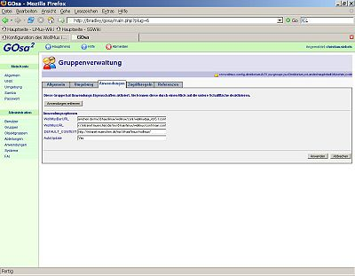

Download
D-III-ITD-D101 stellt Basisarchive der Standardkonfiguration auf der Seite Standardkonfiguration des WollMux downloaden zur Verfügung.
Inhalt
Eine detaillierte Erläuterung der Standardkonfiguration finden Sie im Artikel Standardkonfiguration des WollMux.
Installation auf dem Arbeitsplatzrechner (Basisclient)
Zu allererst sollten Sie die Standardkonfiguration lokal auf einem Basisclient installieren. Erst wenn Sie dies erfolgreich durchgeführt und lokal Ihre referatsspezifischen Änderungen eingepflegt und getestet haben, können Sie im nächsten Schritt die Konfiguration auf dem Server testen. Beachten Sie hierzu auch den empfohlenen Workflow zur Anpassung und Pflege der Standardkonfiguration weiter unten.
Zur Installation auf dem Basisclient gehen Sie wie folgt vor:
- Laden Sie sich die aktuelle Version herunter.
- Extrahieren Sie sie in Ihr persönliches Verzeichnis.
Öffnen Sie das Verzeichnis
/home/<benutzername>/.wollmux(wobei/home/<benutzername>für Ihr persönliches Verzeichnis steht) im Dateimanager (Konqueror). Falls das Verzeichnis noch nicht existiert, legen Sie es an. Beachten Sie, dass das erste Zeichen des Verzeichnisnamens ein Punkt ist.Damit Dateien und Verzeichnisse deren Name mit Punkt beginnt (wie
.wollmux) im Konqueror angezeigt werden, muss die Option Ansicht/Versteckte Dateien anzeigen gesetzt sein.Öffnen Sie die Datei
wollmux.confzum Bearbeiten. Falls Sie noch nicht existiert, erzeugen Sie eine neue Datei dieses Namens..confDateien müssen immer im Unicode UTF-8 Format geöffnet und gespeichert werden, damit Umlaute korrekt funktionieren. Wenn Sie OpenOffice.org zum Bearbeiten verwenden wollen, wählen Sie als Dateityp "Text Kodiert". Achten Sie darauf, beim Speichern als... die Checkbox Filtereinstellungen bearbeiten links unten anzuschalten, um die Kodierung wählen zu können. Andere Editoren auf dem Basisclient (z.B. Kedit) verwenden standardmäßig UTF-8.Löschen Sie den Inhalt der
wollmux.confund geben Sie stattdessen folgendes ein, wobei Sieund durch die entsprechenden Werte ersetzen:
DEFAULT_CONTEXT "file:///home/<benutzername>/wollmux-standard-config-<version>/"
%include "file:///home/<benutzername>/wollmux-standard-config-<version>/conf/main.conf"
%include "file:///home/<benutzername>/wollmux-standard-config-<version>/conf/wollmuxbar_standard.conf"
- Wenn Sie diese Schritte korrekt durchgeführt haben, dann können Sie jetzt über K-Menü/Büroprogramme/Vorlagen und Formulare (Wollmux) die WollMuxBar starten.
- Überprüfen Sie, ob in der WollMuxBar ein Menü namens Bienchen vorhanden ist.
- Falls etwas nicht wie erwartet funktioniert (z.B. die WollMuxBar
nicht startet oder kein Menü Bienchen vorhanden ist), finden Sie
vielleicht einen Hinweis auf das Problem in der Datei
/home/<benutzername>/.wollmux/wollmux.log, in die der WollMux Fehlermeldungen schreibt.
Installation auf dem Server
Installationsvoraussetzungen
Es sollte ein Apache Webserver eingesetzt werden. Die folgenden Anforderungen können mit etwas Aufwand umgangen werden. Dies ist jedoch nicht empfehlenswert.
- Das Dateisystem des Webservers muss symbolische Links (Symlinks) unterstützen. Die üblichen Dateisysteme für Linux und andere Unix-Varianten tun dies. Windows-Dateisysteme unterstützen diese üblicherweise nicht.
- Die Auflösung von symbolischen Links auf dem Webserver muss entweder
global aktiviert sein, oder für bestimmte Verzeichnisse gezielt
freigegeben werden können. Unter Apache ist dies mit der
Option FollowSymlinksmöglich. Diese sollte für das Verzeichnis in dem die WollMux-Konfiguration liegen soll, sowie alle seine Unterverzeichnisse aktiviert sein.
Installationsvorgang
- Extrahieren des Archivs in einem beliebigen Verzeichnis, das der Webserver verfügbar macht.
- Korrektes Setzen der Berechtigungen auf die Dateien, damit sie über den Webserver abgerufen werden können.
ACHTUNG:
Damit der WollMux Dateien mit Umlauten korrekt vom Server laden kann, müssen deren Dateinamen UTF-8 kodiert auf dem Server vorliegen. Die Falle, in die man sehr leicht tappen kann, ist, dass viele Webserver nicht UTF-8 als native Kodierung einsetzen und dass auch der Apache UTF-8 nicht als native Kodierung verwendet. Dies kann zu folgenden Effekten führen:
- Wenn Sie auf dem Webserver eingeloggt sind, sehen Sie die Umlaute nicht korrekt
- Wenn Sie mit dem Webbrowser ein Verzeichnis der Standardkonfiguration aufrufen, sehen Sie die Umlaute nicht korrekt
Wenn Sie nun versuchen, dieses "Problem" zu lösen und die Umlaute zu "korrigieren", dann zerstören Sie in Wirklichkeit die Funktionsfähigkeit der Konfiguration!
Um zu prüfen, ob die Dateien mit Umlauten korrekt auf den Server hochgeladen wurden, gehen Sie wie im Folgenden beschrieben vor. Diese Anweisungen testen auch den Inhalt der Dateien auf korrekte Kodierung.
- Aktivieren Sie für das Verzeichnis in dem sich die
Standardkonfiguration auf dem Server befindet die
Option +Indexes(Es wird angenommen, dass der verwendete Webserver ein Apache ist.), damit die automatische Index-Erstellung aktiviert wird und die Verzeichnisse im Web-Browser angezeigt werden. Rufen Sie mit Firefox die URL auf, die dem obersten Verzeichnis der Standardkonfiguration entspricht. Sie sollten vom Server einen Index vergleichbar dem folgenden angezeigt bekommen
Parent Directory - conf/ 05-Feb-2007 16:00 - scripts/ 01-Feb-2007 09:17 - vorlagen/ 01-Feb-2007 09:17 -Klicken Sie auf
conf/, um den Index dieses Verzeichnisses aufzurufen.- Wählen Sie im Firefox im Menü Ansicht/Zeichenkodierung die Einstellung Unicode (UTF-8).
- Überprüfen Sie, ob der Dateiname
ümläütëtëst.confkorrekt angezeigt wird. - Klicken Sie auf die Datei
ümläütëtëst.conf, um deren Inhalt anzuzeigen. - Wählen Sie wieder im Menü Ansicht/Zeichenkodierung die Einstellung Unicode (UTF-8).
- Überprüfen Sie, ob die Umlaute im Text der Datei korrekt angezeigt werden.
Sollte einer der Tests nicht das richtige Ergebnis bringen, dann sind die Dateien nicht korrekt auf den Server hochgeladen. Beachten Sie, dass solange dieses Problem nicht behoben wurde alle weiteren Tests der Konfiguration sinnlos sind. Sollten Sie nicht in der Lage sein, das Problem alleine zu lösen, dann wenden Sie sich bitte an D-III-ITD-D101.
Server-Konfiguration auf dem Arbeitsplatzrechner aktivieren (Basisclient, GOsa)
Damit die auf dem Server installierte Standardkonfiguration von den WollMux-Installationen auf den Rechnern der Endanwender auch verwendet wird, ist es erforderlich für die Endanwender das WollMux-Anwendungsskript entsprechend zu konfigurieren. Dies geschieht in GOsa.
Die Anwendung wollmux ist bereits in den Gruppen menu-grp-all-* vorhanden und sollte wenn möglich dort konfiguriert werden. Sollte es notwendig sein, eigene Gruppen für den WollMux zu erstellen, da Sie unterschiedliche Konfigurationen für verschiedene Benutzergruppen benötigen, die die selbe menu-grp-all-* verwenden, dann ist es zwingend erforderlich, dass Sie die Anwendung wollmux aus der entsprechenden menu-grp-all-* entfernen, damit kein Benutzer in 2 Gruppen ist, die beide die Anwendung wollmux enthalten. Sollte dies doch geschehen, so ist das Ergebnis unvorhersehbar. Es kann eine Weile funktionieren und plötzlich ohne Hinweis auf die Ursache versagen.
Zur Konfiguration der Anwendung wollmux gehen Sie wie folgt vor:
- Rufen Sie die Seite Gruppen auf.
- Wählen Sie die Gruppe an, in der die Anwendung
wollmuxzu finden ist (normalerweise eine der menu-grp-all-* Gruppen). - Wählen Sie den Reiter Anwendungen.
- Falls eine Fehlermeldung kommt, die Ihnen mitteilt, dass der Releasename nicht gefunden werden konnte, ignorieren Sie diese Meldung.
- Wählen Sie bei Release-Fokus die korrekte Basisclient-Version aus.
- Klicken Sie auf Büroprogramme, dann auf das Icon Eintrag bearbeiten in der Zeile wollmux.
- Sie bekommen folgende Maske

Setzen Sie die Einträge wie folgt
| Option | Wert |
|---|---|
| WollMuxBarUrl: | http://<Pfad der Konfiguration auf dem Web-Server>/conf/wollmuxbar_standard.conf |
| WollMuxUrl: | http://<Pfad der Konfiguration auf dem Web-Server>/conf/main.conf |
| DEFAULT_CONTEXT: | http://<Pfad der Konfiguration auf dem Web-Server>/ |
| AutoUpdate: | No |
Ersetzen Sie dabei http://<Pfad der Konfiguration auf dem
Web-Server> durch die korrekte URL. Die korrekte URL ist die, die
Ihnen, wenn Sie sie im Browser eingeben (und die automatische
Index-Erstellung auf dem Webserver aktiviert ist), einen Index wie den
Folgenden liefert:
Parent Directory -
conf/ 05-Feb-2007 16:00 -
scripts/ 01-Feb-2007 09:17 -
vorlagen/ 01-Feb-2007 09:17 -
Die Parameter WollMuxUrl und DEFAULT_CONTEXT
Diese Parameter müssen bei einer Standardkonfiguration immer wie oben beschrieben gesetzt werden.
Der Parameter AutoUpdate
Die automatisch vom Anwendungsskript angelegte .wollmux/wollmux.conf
enthält einen Marker, der besagt, dass sie bei jedem Einloggen des
Benutzers mit den aktuellen Werten aus GOsa versorgt werden soll. Wurde
dieser Marker manuell entfernt, findet dieser Update nicht mehr statt.
Durch das Setzen von AutoUpdate auf "Yes" oder "Ja" kann man den Update
dennoch erzwingen. Dies ist nur in Ausnahmefällen notwendig. Für
Benutzergruppen in denen sich Personen befinden, die mit Test und Pflege
des WollMux bzw. der Standardkonfiguration betraut sind sollte
AutoUpdate immer auf "No" stehen, da diese Personen normalerweise eine
lokal installierte Standardkonfiguration nutzen wollen und dazu die
.wollmux/wollmux.conf anpassen müssen.
Der Parameter WollMuxBarUrl
Es ist oft erforderlich, dass nicht alle Benutzer eines Referats die
selbe WollMux-Konfiguration verwenden. Insbesondere was die angebotenen
Menüs und Vorlagen in der WollMuxBar angeht, gibt es oft
unterschiedliche Anforderungen. Aus diesem Grund ist in der
Standardkonfiguration die Beschreibung der Buttons und Menüs der
WollMuxBar in eine eigene Datei ausgelagert. Der Parameter
WollMuxBarUrl legt fest, aus welcher Datei die Definition der
WollMuxBar geladen werden soll. Das Skript run_automux erzeugt für
jede Gruppe eine Datei wollmuxbar_.conf. Die oben
angegebene WollMuxBarUrl lädt also die WollMuxBar für die Gruppe
"standard". Wenn Sie eine andere WollMuxBar verwenden wollen, ändern Sie
den Dateinamen entsprechend. Wie Sie die Konfiguration für verschiedene
Benutzergruppen anpassen und das run_automux Skript verwenden,
erfahren Sie auf der Seite Standardkonfiguration des WollMux.
Server-Konfiguration auf dem Arbeitsplatzrechner aktivieren (Windows, manuell)
Damit die auf dem Server installierte Standardkonfiguration von den
WollMux-Installationen auf den Rechnern der Endanwender auch verwendet
wird, ist es erforderlich, dass eine lokale wollmux.conf angelegt
wird. Da es für Windows keine einheitlichen Mechanismen gibt, um dies zu
erledigen, wird hier die händische Methode beschrieben. Für den
großflächigen Einsatz müssen die entsprechenden Schritte automatisiert
werden.
Systemweite Konfiguration
Die im Folgenden beschriebenen Schritte machen die Konfiguration systemweit verfügbar, d.h. die Einstellungen gelten für jedes Benutzerkonto, solange dafür nicht eine benutzerspezifische Konfiguration angelegt wurde (siehe nachfolgender Abschnitt).
- Öffnen Sie das Verzeichnis
C:\Programme\wollmux\im Dateimanager. Falls es nicht existiert, legen Sie es an. Öffnen Sie in diesem Verzeichnis die Datei
wollmux.confzum Bearbeiten. Falls Sie noch nicht existiert, erzeugen Sie eine neue Datei dieses Namens..confDateien müssen immer im Unicode UTF-8 Format geöffnet und gespeichert werden, damit Umlaute korrekt funktionieren. Wenn Sie OpenOffice.org zum Bearbeiten verwenden wollen, wählen Sie als Dateityp "Text Kodiert". Achten Sie darauf, beim Speichern als... die Checkbox Filtereinstellungen bearbeiten links unten anzuschalten, um die Kodierung wählen zu können. Beachten Sie, dass WordPad nicht zum Bearbeiten von.confDateien verwendet werden kann. Der von WordPad unterstützte Dateityp "Unicode-Textdokument" ist nicht UTF-8!Löschen Sie den Inhalt der
wollmux.confund geben Sie stattdessen folgendes ein:DEFAULT_CONTEXT "http://<Pfad der Konfiguration auf dem Web-Server>/" %include "http://<Pfad der Konfiguration auf dem Web-Server>/conf/main.conf" %include "http://<Pfad der Konfiguration auf dem Web-Server>/conf/wollmuxbar_standard.conf"Ersetzen Sie dabei "
http://<Pfad der Konfiguration auf dem Web-Server>" durch die korrekte URL. Die korrekte URL ist die, die Ihnen, wenn Sie sie im Browser eingeben (und die automatische Index-Erstellung auf dem Webserver aktiviert ist), einen Index wie den Folgenden liefert:Parent Directory - conf/ 05-Feb-2007 16:00 - scripts/ 01-Feb-2007 09:17 - vorlagen/ 01-Feb-2007 09:17 -Wenn Sie diese Schritte korrekt durchgeführt haben, dann sollte die auf Ihrem Server gespeicherte Konfiguration vom WollMux verwendet werden.
- Falls etwas nicht funktioniert, finden Sie vielleicht einen Hinweis
auf das Problem in der Datei
/.wollmux/wollmux.log, in die der WollMux Fehlermeldungen schreibt.ist dabei das Verzeichnis, in dem sich der Ordner " EigeneDateien" des Benutzers befindet. Unter Windows 2000 ist dies das VerzeichnisC:\DokumenteundEinstellungen\, unter Windows NT C:\WINNT\Profiles\.
Benutzerspezifische Konfiguration
Die im Folgenden beschriebenen Schritte machen die Konfiguration nur für ein bestimmtes Benutzerkonto verfügbar. Für eine systemweite Konfiguration folgen Sie den Anweisungen im voranstehenden Abschnitt.
- Identifizieren Sie das lokale Benutzerverzeichnis. Unter Windows
2000 ist dies
C:\Dokumente und Einstellungen\<Benutzerkürzel>, unter Windows NTC:\WINNT\Profiles\<Benutzerkürzel>. Allgemein ist es das Verzeichnis, das den Ordner "Eigene Dateien" des Benutzers enthält. Legen Sie in diesem Verzeichnis einen Ordner mit Name
.wollmuxan, falls so ein Ordner dort noch nicht existiert. Beachten Sie, dass das erste Zeichen des Namens ein Punkt ist. Über den Windows-Explorer ist es leider nicht möglich, einen Ordner anzulegen, dessen Name mit einem Punkt beginnt. Über die Eingabeaufforderung ist dies jedoch möglich mit folgenden Befehlen (exemplarisch für Windows 2000):cd C:\Dokumente und Einstellungen\<Benutzerkürzel>\ mkdir .wollmux`Legen Sie in diesem Verzeichnis eine Datei
wollmux.confan, mit dem selben Inhalt wie im vorangehenden Abschnitt "Systemweite Konfiguration" beschrieben.
Anpassung und Pflege der Standardkonfiguration
Voraussetzungen
Die Pflege der Standardkonfiguration erfordert immer ein Linux-System, vorzugsweise einen Basisclient. Wollen Sie in Ihrem Referat derzeit keine Basisclients im internen Netz einsetzen, so empfehlen wir die Verwendung eines Offline-Rechners, z.B. eines Notebooks mit Offline-Basisclient, wie ihn jedes Referat mit seinem Verteilserver einrichten kann. Der Austausch zwischen diesem Rechner und dem internen Netz ist mittels eines USB-Sticks einfach möglich und fügt sich in den unten beschriebenen empfohlenen Workflow nahtlos ein.
Workflow
Im Rahmen der Anpassung und Pflege einer Standardkonfiguration fallen in den Referaten diverse Aufgaben an, z.B. das Einpflegen neuer referatseigener Formulare, dass Ändern existierender Vorlagen, das Anlegen neuer Benutzergruppen, die eine andere WollMuxBar angezeigt bekommen sollen, und vieles mehr. Damit all diese Tätigkeiten reibungslos und ohne Gefährdung des Dienstbetriebs über die Bühne gehen empfehlen wir den folgenden Workflow.
Lokale Kopie erstellen: die aktuelle Konfiguration vom Server wird auf die lokale Festplatte eines Basisclients kopiert und dort gemäß dem Abschnitt Installation auf dem Arbeitsplatzrechner (Basisclient) eingerichtet. Damit dieser Schritt nicht jedes Mal wiederholt werden muss, bietet es sich an, Änderungen an der Standardkonfiguration immer mit dem selben Benutzerkonto durchzuführen und für dieses Benutzerkonto die lokale Konfiguration dauerhaft eingerichtet zu lassen. Wird die lokale Kopie im HOME-Verzeichnis abgelegt ist sie über die Profilsynchronisation auf jedem Rechner verfügbar. Soll die Wartung der Standardkonfiguration mit verschiedenen Benutzerkonten auf verschiedenen Rechnern erfolgen, so sollte unbedingt ein Versionskontrollsystem wie z.B. Subversion (in der LHM freigegeben) eingesetzt werden.
Beachten Sie, dass es je nach eingesetztem Fileserver unter Umständen zu Problemen mit Symlinks kommen kann, wenn Sie auf einem Netzlaufwerk arbeiten. Die Arbeit auf der lokalen Festplatte ist daher meist anzuraten.
- Änderungen umsetzen: Die gewünschten Änderungen werden in der lokalen Kopie umgesetzt.
run_automuxaufrufen: Nach jeder Änderung sollte das Skriptrun_automuxaufgerufen werden, ansonsten funktioniert sie unter Umständen nicht. Einzige Ausnahme ist das Bearbeiten von .conf Dateien. Danach istrun_automuxnicht erforderlich.Das Skript bestimmt die zu bearbeitende Konfiguration aus dem eigenen Aufrufpfad. Es muss also immer das
run_automuxaus demscripts/Verzeichnis aufgerufen werden, das zu der Standardkonfiguration gehört, die man bearbeitet.Änderungen testen: Es wird mit der lokalen Kopie getestet, ob die Änderungen die gewünschte Wirkung zeigen.
- Gesamttest: Je nach Referat kann die Konfiguration sehr komplex
sein und sehr viele Vorlagen enthalten. Da das Funktionieren der
Konfiguration in den meisten Fällen kritisch für den Dienstbetrieb
ist, muss die Konfiguration als Ganzes getestet werden, bevor sie
auf den Server hochgeladen wird. Der Test der Änderungen selbst wie
im vorigen Schritt durchgeführt, ist dazu nicht ausreichend, da jede
Änderung potentiell andere Teile, die auf den ersten Blick mit der
Änderung nichts zu tun haben, in Mitleidenschaft gezogen haben kann.
Der Gesamttest sollte mindestens den folgenden Ablauf enthalten:
- Alle OpenOffice.org Instanzen sowie alle Instanzen der WollMuxBar beenden
- .wollmux/wollmux.log löschen
- WollMuxBar aufrufen
- Menüpunkte testen: Es sollten soviele Menüpunkte und Buttons wie möglich aktiviert und das Ergebnis kontrolliert werden, um sicherzustellen, dass sich noch alle Funktionen korrekt aufrufen lassen. Bei umfangreichen Konfigurationen ist ein kompletter Test unpraktikabel, es muss jedoch mindestens von jeder unterschiedlichen Kategorie (z.B. Vorlage, Web-Link, PDF-Formular, Menüeintrag, Button, externer Briefkopf, interner Briefkopf, WollMux-Formular,...) ein Exemplar aufgerufen werden.
- .wollmux/wollmux.log überprüfen: Wenn der LOGGING_MODE (siehe
Abschnitt Logging und Debugging
in der Dokumentation der
wollmux.conf) nicht auf "debug" oder "all" eingestellt ist (was er für den obigen Test nicht sein sollte), produziert der WollMux im Normalfall keine Log-Meldungen. Wurden während des obigen Tests dennoch Log-Meldungen produziert, sollten diese gründlich überprüft werden. Es gibt (neben den Debug-Meldungen bei entsprechend gesetztem LOGGING_MODE) einige wenige Logmeldungen, die nicht auf einen Fehler in der Konfiguration zurückzuführen sind. Meldungen des Typs "ERROR" sind jedoch immer schwerwiegende Probleme. Sollten Sie beim Test eine Meldung des Typs "ERROR" in ihrerwollmux.logerhalten, sollten Sie die geänderte Konfiguration auf keinen Fall auf einen für den Produktivbetrieb eingesetzten Server überspielen. Sie gefährden damit den Dienstbetrieb.
Konfiguration auf den Server übertragen: Das direkte Übertragen der Einzeldateien der Konfiguration auf den Server mittels FTP oder SCP ist nicht empfehlenswert, da dabei diverse Dinge schief gehen können, wie z.B. dass Umlaute in Dateinamen beschädigt werden oder dass Symlinks nicht korrekt übertragen werden. Die folgende Vorgehensweise ist weniger fehleranfällig:
tar-Archiv erstellen: Wenn wir davon ausgehen, dass im Verzeichnis
wollmux-config/die Konfiguration gespeichert ist, kann mit folgendem Befehl ein tar-Archiv erzeugt werdentar --owner=0 --group=0 --format=<format> -cf /tmp/wollmux-config.tar wollmux-config/Dies erzeugt im Verzeichnis
/tmpein Archiv namenswollmux.tar. Die Parameter--owner=0und--group=0verhindern, dass die Dateien beim Extrahieren auf dem Server eine Zuordnung zu einem Benutzerkonto bekommen, das auf dem Server nicht existiert. Alskönnen verschiedene Formate angegeben werden, um Kompatibilität mit verschiedenen tar-Versionen zu erreichen. Der Befehl tar--helpliefert Ihnen eine Aufstellung der möglichen Optionen. Wenn Ihr Webserver ein Linux-System ist, ist das richtige Format mit großer Wahrscheinlichkeit "gnu" oder "oldgnu".Sollte der Webserver keine Symlinks unterstützen, so kann noch der Parameter
--dereferenceangegeben werden. Bei diesem Parameter werden Symlinks im Archiv automatisch durch Kopien der referenzierten Dateien ersetzt. Bei Verwendung dieses Parameters ist es zwingend erforderlich, die Originalfassung der Konfiguration mit den Symlinks getrennt zu archivieren, da sich diese aus der auf dem Server gespeicherten Version dann nicht mehr rückgewinnen lässt.tar-Archiv auf den Server kopieren
tar-Archiv auf dem Server extrahieren: Es sollte auf keinen Fall direkt die Konfiguration für den Produktivbetrieb ersetzt werden. Zuerst sollte die neue Konfiguration so extrahiert werden, dass ein neues Verzeichnis parallel zur Produktivkonfiguration entsteht. Bei diesem Verzeichnis sollten die Dateirechte überprüft und richtig gesetzt werden. Bei vielen Webservern müssen Dateien einem bestimmten Benutzer gehören (z.B. "wwwrun"). Die richtige Zuordnung sollte überprüft werden.
Wenn es sich bei Ihrem Webserver nicht um ein Linux-System handelt und es beim Extrahieren Probleme gibt, versuchen Sie statt dem Befehl
tarden Befehlgtarzu verwenden. Auf Betriebssystemen, die ihre eigene Tar-Version mitliefern, ist der GNU Tar oft unter diesem Namen verfügbar. Da der Basisclient den GNU Tar verwendet, ist bei der Verwendung vongtarauf dem Server eine bessere Kompatibilität gewährleistet.Browser-Test der neuen Konfiguration: Der im Abschnitt "Installation auf dem Server" beschriebene Test mit dem Web-Browser sollte für die URL der neuen Konfiguration durchgeführt werden.
- Neue Konfiguration aktivieren: Die Aktivierung geschieht am besten durch das Umbenennen des Verzeichnisses mit der alten Konfiguration in einen anderen Namen (z.B. "wollmux-config-<datum>", wobei <datum> das aktuelle Datum ist) gefolgt vom Umbenennen des Verzeichnisses mit der neuen Konfiguration hin zum richtigen Namen. Während des Zeitraums der Umbenennung sollte kein Benutzer auf die Konfiguration zugreifen. Deshalb sollte diese ausserhalb der üblichen Dienstzeiten erfolgen. Die alte Konfiguration sollte noch eine Weile aufgehoben werden, so dass man sie im Notfall schnell reaktivieren kann.
- Praxistest: Von einem normalen Benutzeraccount aus, der keine lokale WollMux-Konfiguration hat, sollte überprüft werden, ob die neue Konfiguration im Praxiseinsatz funktioniert.
Update der Standardkonfiguration
Vorüberlegungen
In unregelmäßigen Abständen stellt D-III-ITD-D101 neue Versionen der Standardkonfiguration auf der Downloadseite zur Verfügung.
Kategorien von Änderungen
Die Änderungen, die sich in neuen Releases finden lassen sich grob in folgende Kategorien einteilen. Das Verständnis dieser Kategorien ist nützlich bei der Planung, wann Sie Ihre Referatskonfiguration updaten wollen.
Verbesserungen der Standardbriefköpfe
Die Standardbriefköpfe haben sich stetig weiterentwickelt, sowohl in Bezug auf die Einhaltung des städtischen Erscheinungsbildes als auch bezogen auf die Stabilität gegenüber dem Export nach Word. Dazu kommen Änderungen, die die Usability betreffen, wie z.B. das Schützen von Rahmen gegen versehentliches Löschen. Zu guter letzt erfordern auch neue WollMux-Features gelegentlich eine Änderung der Briefköpfe.
Änderungen aus dieser Kategorie können meist automatisch durch das
xupdate Skript in eine Referatskonfiguration übertragen werden und
sind typischerweise kompatibel mit älteren WollMux-Versionen.
Neue Standardvorlagen
Von Zeit zu Zeit wird die Menge der Standardvorlagen erweitert. Die
neuen Vorlagen selbst werden im allgemeinen von xupdate
übertragen, die Einträge dafür in der WollMuxBar jedoch in der
Regel nicht. Eine Kompatibilität der neuen Vorlagen mit alten
WollMux-Versionen kann, aber muss nicht immer, gegeben sein.
Änderungen an zentral vorgegebenen Aspekten der WollMux-Standardkonfiguration
Der WollMux ist sehr flexibel konfigurierbar. Jedoch sollten nicht alle Aspekte für die die technische Möglichkeit der Anpassung gegeben ist auch tatsächlich durch die Referate geändert werden. Ein wichtiger Zweck der WollMux-Standardkonfiguration ist es, da zu vereinheitlichen, wo es sinnvoll ist. Dies betrifft zum Beispiel den Aufbau der WollMux-Dialoge, wie z.B. des Dialogs zur Anpassung der eigenen Daten. Eine Anpassung ist hier nur in Ausnahmefällen sinnvoll. Manchmal jedoch sind aus verschiedenen Gründen Änderungen an diesen Aspekten erforderlich (z.B. zur Korrektur von Rechtschreibfehlern). Diese Änderungen werden zentral über die von D-III-ITD-D101 bereitgestellten Releases der Standardkonfiguration verteilt.
Änderungen aus dieser Kategorie können meist automatisch durch das
xupdate Skript in eine Referatskonfiguration übertragen werden und
sind typischerweise kompatibel mit älteren WollMux-Versionen.
Demonstration neuer Features
Der WollMux entwickelt sich ständig weiter. Viele neue Features
lassen sich nur nutzen, wenn sie entsprechend konfiguriert sind. Die
von D-III-ITD-D101 bereitgestellte Standardkonfiguration versucht,
möglichst viele WollMux-Features zu demonstrieren und wird deshalb
ständig um die dafür benötigten Elemente erweitert. Änderungen
dieser Kategorie betreffen meist die Teile, die von den Referaten
typischerweise angepasst werden (z.B. der Aufbau der WollMux-Leiste)
und werden deshalb meist nicht automatisch vom xupdate
Skript übertragen. In den Fällen in denen sie es doch werden, sind
Kompatibilitätsprobleme (z.B. Fehlermeldungen in der wollmux.log)
mit älteren WollMux-Versionen nicht unwahrscheinlich.
Änderungen am Aufbau der Standardkonfiguration
Gelegentlich werden Änderungen an der Struktur der
Standardkonfiguration vorgenommen. Es werden zum Beispiel
Konfigurationseinstellungen in andere Dateien ausgelagert oder es
kommen neue Dateien hinzu. Diese Änderungen werden teilweise von
xupdate übertragen, teilweise auch nicht. Kompatibilitätsprobleme
mit älteren WollMux-Versionen sind bei diesen Änderungen meist
nicht gegeben.
Changelog
Zu jedem neuen Release der Standardkonfiguration gibt es ein Changelog,
in dem die Änderungen im Vergleich zum vorigen Release aufgeführt sind.
Zudem ist im Changelog auch dargestellt, welche Änderungen sich
automatisiert mit xupdate in eine Referatskonfiguration übertragen
lassen und wo manuelle Eingriffe erforderlich sind. Bevor Sie Ihre
Referatskonfiguration updaten, sollten Sie das Changelog gründlich
lesen, um sich einen Überblick darüber zu verschaffen, wie umfangreich,
risikoreich und wichtig das Update ist.
Versionen überspringen
Wenn Sie sich entschließen, eine Version zu überspringen, dann vergessen Sie nicht, das Changelog der übersprungenen Version(en) beim nächsten Update mit zu berücksichtigen. Insbesondere die Änderungen, die manuell zu übertragen sind, müssen in der korrekten Reihenfolge umgesetzt werden. Sie sollten also, wenn Sie ein Update auslassen, diese Information an einer Stelle dokumentieren, wo alle verantwortlichen Personen sie beim nächsten Update wiederfinden, damit keine Unklarheit aufkommen kann, auf welchem Stand sich Ihre Referatskonfiguration befindet und welche manuellen Änderungen nachzuziehen sind.
Vorgehensweise zur Durchführung des Update
Das Einpflegen der Änderungen eines neuen Releases der von D-III-ITD-D101 bereitgestellten Standardkonfiguration in Ihre Referatskonfiguration folgt grundsätzlich dem selben Workflow wie weiter oben im Abschnitt Anpassung und Pflege der Standardkonfiguration beschrieben. Die dort beschriebenen Schritte werden hier nicht wiederholt. Nur die Schritte zur Durchführung der zum Update notwendigen Änderungen sind im Folgenden genauer ausgeführt. Ausgangssituation ist dabei eine lokale Kopie der aktuellen Referatskonfiguration, in die die Änderungen eingepflegt werden sollen.
- Backup anlegen: Bevor Sie mit dem Update beginnen sollten Sie von Ihrer lokalen Kopie nochmals eine Kopie anlegen, um im Problemfall schnell und einfach auf die Originaldateien zugreifen zu können.
- Neue Standardkonfiguration entpacken: Laden Sie sich die neueste Version der Standardkonfiguration herunter und entpacken Sie diese auf Ihrer lokalen Festplatte. Beachten Sie, dass es je nach eingesetztem Fileserver unter Umständen zu Problemen mit Symlinks kommen kann, wenn Sie auf einem Netzlaufwerk arbeiten. Die Arbeit auf der lokalen Festplatte ist daher meist anzuraten.
xupdate'' ausführen'': Starten Sie aus dem Verzeichnis scripts das Skriptxupdate.Es ist wichtig, dass Sie das
xupdateSkript aus der neuen Standardkonfiguration verwenden, da nur das neue Skript alle Neuerungen korrekt übertragen kann.Die Benutzerführung im erscheinenden Dateiauswahldialog ist etwas gewöhnungsbedürftig. Klicken Sie sich im linken Fenster durch bis zu dem Verzeichnis, in dem Ihre Referatskonfiguration liegt, so dass im linken Fenster die Verzeichnisse conf/, scripts/ und vorlagen/ angezeigt werden. Klicken Sie dann auf den Button OK (wobei die Eingabezeile über dem Button leer ist. Es folgt eine Sicherheitsabfrage. Nachdem Sie überprüft haben, ob Sie die korrekten Verzeichnisse ausgewählt haben, bestätigen Sie mit Ja, um das Update zu starten.
Nähere Informationen zur Funktionsweise von
xupdatefinden Sie in einem späteren Abschnitt.- ''Log-Datei von ''
xupdateüberprüfen: Überprüfen Sie die Ausgabe vonxupdateauf Fehlermeldungen oder andere ungewöhnliche Meldungen. DasxupdateSkript protokolliert alle seine Aktionen und Fehler in der Dateixupdate.logim selbenscripts/Verzeichnis aus dem es aufgerufen wurde. Ein Teil der Meldungen (jedoch nicht alle, wenn es zu viele sind) werden auch in einem Fenster auf dem Bildschirm angezeigt. Falls Sie bei einer Meldung Zweifel haben sollten, ob diese normal ist, so fragen Sie bitte bei D-III-ITD-D101 nach. Wennxupdatenicht korrekt abläuft, haben weitere Arbeiten an der Konfiguration keinen Sinn. - manuelle Änderungen durchführen: Nicht alle Änderungen werden
durch
xupdateautomatisch übertragen. Die Änderungen, die manuell durchzuführen sind, sind im Changelog aufgeführt. Nicht alle dieser Änderungen sind notwendig. Oft handelt es sich dabei nur um Teile, die zur Demonstration neuer Features notwendig sind. Nachdem Sie entschieden haben, welche der manuell zu tätigenden Änderungen Sie benötigen, setzen Sie diese um. Sollten Sie einmal unsicher sein, ob Sie eine bestimmte Änderung benötigen, oder wie Sie diese durchführen sollen, so eröffnen Sie bitte ein Ticket. run_automuxaufrufen: Nach jeder Änderung sollte das Skriptrun_automuxaufgerufen werden, ansonsten funktioniert sie unter Umständen nicht. Einzige Ausnahme ist das Bearbeiten von .conf Dateien. Danach istrun_automuxnicht erforderlich.Das Skript bestimmt die zu bearbeitende Konfiguration aus dem eigenen Aufrufpfad. Es muss also immer das
run_automuxaus dem richtigen scripts/ Verzeichnis aufgerufen werden.Test: Testen Sie die geänderte Konfiguration, wie im Abschnitt Anpassung und Pflege der Standardkonfiguration beschrieben.
Achtung: Auf gründliche Tests vor dem Produktiveinsatz darf auf keinen Fall verzichtet werden. Die bei D-III-ITD-D101 vor dem Release einer neuen Standardkonfiguration durchgeführten Tests sind nicht umfassend und können Tests vor Ort im Referat nicht ersetzen, denn
- solange der WollMux sich noch in der Entwicklungsphase befindet, wird die Standardkonfiguration immer vorrangig mit dem aktuellsten WollMux-Snapshot getestet. Tests zur Kompatibilität mit alten WollMux-Versionen und entsprechende Hinweise im Changelog dienen als Orientierung und Hilfestellung für die Referate bei Planung und Test ihrer Updates. Sie sind nicht als definitive Aussagen zu verstehen. Dass Ihre Referatskonfiguration nach einem Update noch mit der bei Ihnen eingesetzten WollMux-Version reibungslos zusammenspielt, muss immer durch Tests im Referat sichergestellt werden bevor eine Konfiguration in den Produktiveinsatz übernommen wird. Sollten Sie dabei auf unerwartete Probleme stoßen, eröffnen Sie bitte ein Ticket. In den meisten Fällen lassen sich Kompatibilitätsprobleme durch einfache Eingriffe beheben bzw. die benutzersichtbaren Auswirkungen beseitigen, ohne dass das komplette Update zurückgerollt und die Version übersprungen wird. Berücksichtigen Sie bei jedem Update mögliche Supportzeiten in Ihrer Zeitplanung.
- kein Referat setzt die Standardkonfiguration unverändert ein (d.h. mit den Gruppen "Bienchen" und "Blümchen"). Jede Anpassung, egal wie harmlos sie erscheinen mag, kann zu Problemen beim Update führen.
- die korrekte Funktionalität des
xupdateSkripts bei Anwendung auf Ihre angepasste Referatskonfiguration kann D-III-ITD-D101 naturgemäß nicht sicherstellen. - beim Update auf eine neue Version sind oft manuelle Anpassungen notwendig. Dabei können sich leicht Fehler einschleichen. Überprüfen Sie daher bevor Sie ein Ticket eröffnen immer, ob Sie die notwendigen manuellen Änderungen vollständig durchgeführt haben. Falls Sie einen Versionssprung ausgelassen haben, überprüfen Sie, dass Sie die manuellen Änderungen der ausgelassenen Versionen alle in der richtigen Reihenfolge (das älteste zuerst) nachgetragen haben.
Das Skript xupdate
Das Skript xupdate dient dem automatisierten Update der Dateien einer
Standardkonfiguration, die von den Referaten nicht geändert werden
sollten.
Funktionsweise
Die Funktion von xupdate besteht im wesentlichen darin, alle
Dateien, die nicht auf einer "Schutzliste" stehen von der
Standardkonfiguration aus deren scripts/ Verzeichnis xupdate
aufgerufen wurde an die entsprechenden Stellen in einer anderen
Standardkonfiguration zu kopieren. Auf der erwähnten "Schutzliste"
stehen alle Dateien und Verzeichnisse, deren Inhalt dafür vorgesehen
ist, von den Referaten angepasst zu werden. Würde xupdate diese
Dateien überschreiben, so müssten referatsspezifische Anpassungen nach
jedem Update erneut durchgeführt werden.
Log-Datei
Das xupdate Skript protokolliert alle seine Aktionen und Fehler in der
Datei xupdate.log im selben scripts/ Verzeichnis aus dem es
aufgerufen wurde. Wenn sehr viele Meldungen produziert werden weil viele
Dateien zu kopieren sind, dann passen nicht alle Meldungen in die
Message Box, die auf dem Bildschirm angezeigt wird. In dem Fall sollte
die Log-Datei herangezogen werden.
Liste der nicht durch xupdate überschriebenen Dateien
wollmuxbar_<gruppe>.conf: Diese Dateien müssen durchrun_automuxnach dem Update regeneriert werden.Die folgenden Dateien sind für die manuelle Anpassung durch die Referate vorgesehen
adressauswahl-referat.conf mapDienstgebaeude.conf mapOberOrga.conf mapOrgaKurz.conf mapReferent.conf referat.conf referat_`<gruppe>`.conf tastenkuerzel.conf textbausteine.conf formularanpassung.conf formularmax4000.confalle Unterverzeichnisse von
vorlagen/fragmente, deren Namen keine Dateierweiterung haben: Diese Verzeichnisse sind für referatsspezifische Fragmente vorgesehen. Beachten Sie, dass das Verzeichnisvorlagen/fragmente/beispiele/, das in den von D-III-ITD-D101 bereitgestellten Archiven der WollMux-Standardkonfiguration zu finden ist, keine Sonderstellung genießt. Es wird wie alle anderen Unterverzeichnisse ohne Dateierweiterung nicht durchxupdatekopiert. Ein Unterverzeichnisvorlagen/fragmente/beispiele/kann bei Bedarf also durch die Referate genutzt werden ohne die Gefahr, vonxupdateüberschrieben zu werden.
Gedanken zur Verbesserung
Wichtigste Anforderung ist die Pflegbarkeit durch mehrere Benutzer. Derzeit ist aufgrund der verwendeten symbolischen Links eine Pflege über ein gemeinsames CIFs/SMB-Netzlaufwerk nicht möglich (NFS wäre möglich, ist aber nicht zugelassen). Folgende Alternativen zur Umsetzung dieser Anforderung sind denkbar:
Alternative 1
- Jeder Bearbeiter hat Kopie auf seiner Festplatte und arbeitet nur auf seiner Festplatte
- Synchronisation der einzelnen Benutzer über Versionsverwaltungssystem
- Nach Test Kopieren auf Server per SCP (kann zum Problem werden, wenn nur root Zugang auf den Server hat)
Alternative 2
Desymlinkfizierung:
- D10 stellt zukünftig auch für Linux eine Standardconfig ohne Symlinks zur Verfügung
- xupdate verwendet bei Schreibzugriff auf ein Netzlaufwerk nicht die Symlinks, sondern die Dateien
Nachteile:
- Symlinks zur Erleichterung alternativer Menüs (z.B. Bienchen/Blümchen) nicht gelöst/umsetzbar
- Wenn neue Fragmente in X.insertFrag hinzukommen und nicht der Symlink kopiert wird, greift das nächste Update des Fragments nicht
Vorteil: xupdate kann dann auch von Vorlagenumstellern ohne Serverzugang aufgerufen werden
Alternative 3
Windows .lnk-Dateien in Automux unterstützen
- Für Konqueror wird über eine Erweiterung des Drag&Drop-Menüs bzw. über einen Eintrag im Kontextmenü von Dateien und Verzeichnissen die Möglichkeit zur Erzeugung von lnk-Dateien hinzugefügt.
Nachteil: können nicht mit dem Basisclient erstellt werden
Alternative 4
Verwendung des Menümanagers
- Statt Symlinks für Bienchen und Blümchen Verwendung von Menügruppen
- Erweiterung der Anwendungsskripte für Gosa um weiteren Parameter
- Standardconfig müsste komplett überarbeitet werden - neues Konzept
- Logo-Fragemnte würden über override-Frag / Spaltenanpassungen umgesetzt werden
Nachteile:
- nicht unterstützt: referat_blümchen.conf
- jeder kann alle Vorlagen sehen (wenn Optionen-Menü verfügbar)
- Änderungen / neuer Schulungsbedarf
Alternative 5
- xupdate wird angepasst für einfaches Updaten auf dem Server (ohne xdialog zu verwenden).
- Produktiv- und Testkonfiguration liegt auf unix-Server mit unix-Dateisystem
- Über ein gemeinsam verwendetes Netzlaufwerk (gemounted mit CIFs/SMB, da NFS nicht zugelassen) können Vorlagen des Testsystems geändert werden
- Über Umbenennung der Verzeichnisse bzw. symbolische Links auf Hauptverzeichnis der Config wird Testconfig zur Produktivconfig
Nachteil: Symlinks sind nicht erkennbar. Struktur für alternative Menüs können nicht durch Vorlagenumsteller angepasst werden
Alternative 6
- Symlinks durch eigene Link-Dateien ersetzt werden, um Probleme zu vermeiden
- automux ersetzt vorhandene Symlinks immer durch eigene Link-Dateien
- ggf. Konqueror-Erweiterung des Kontextmenüs von Dateien/Verzeichnissen, mit dem eigene Link-Dateien komfortabel erstellt werden können
- ggf. Vereinfachung durch Java basierten, selbst entwickelten Browser, der Pflege von Dokumenten und der Struktur ermöglicht, und dabei Link-Files im eigenen Link-Format erzeugt (z.B. muCommander hacken).